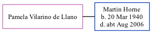

Pamela Horne (née Vilarino de Llano)
[ Home ] | [ Calendar ] | [ Surnames Index ] | [ Family History ]Pamela Vilarino de llano, the wife of Martin Stuart Horne (the second cousin once-removed on the father's side of Nigel Horne), and married Martin in Thanet, Kent, England around Nov 19701.
Citations
- England & Wales marriages 1837-2008 - Findmypast
Media
England & Wales marriages 1837-2008 Transcription - BMD-M-1970-4-AZ-000715-077
England & Wales marriages 1837-2008 - BMD/M/1970/4/AZ/001585/003
Family Tree
Generated by ged2site. Last updated on Nov 13, 2024